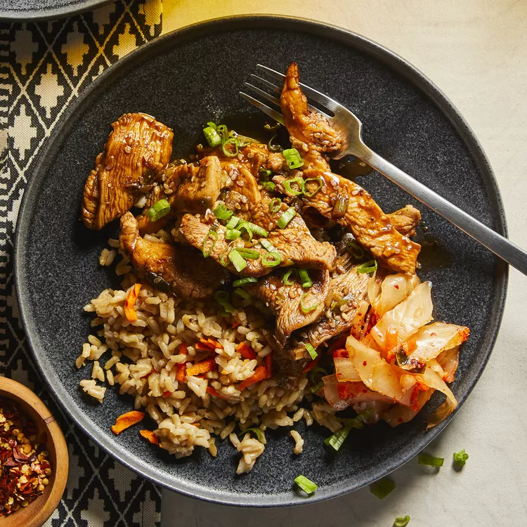

Chiken-bulgogi

Description
This bulgogi chicken
This bulgogi chicken is a quick-and-easy, but very tasty, meal. It only takes 30 minutes with very few dirty dishes! Serve over rice.
Ingredients
1/4 cup chopped onion
5 tablespoons soy sauce
2 1/2 tablespoons brown sugar
2 tablespoons minced garlic
2 tablespoons seasame oil
1 tablespoon sesame seeds
1/2 teaspoon cayenne
salt and ground black pepper to taste
1 pound skinles, boneless chicken breasts, cut into thin strips
Directions
- Whisk onion, soy sauce, brown sugar, garlic, seasame oil, sesame seeds, cayenne pepper,
salt, and black pepper together into a bowl until the marinade is smooth
- Cook and stir chicken and marinade together in a large skillet over medium-high heat until chicken
is cooked through, about 15 minutes